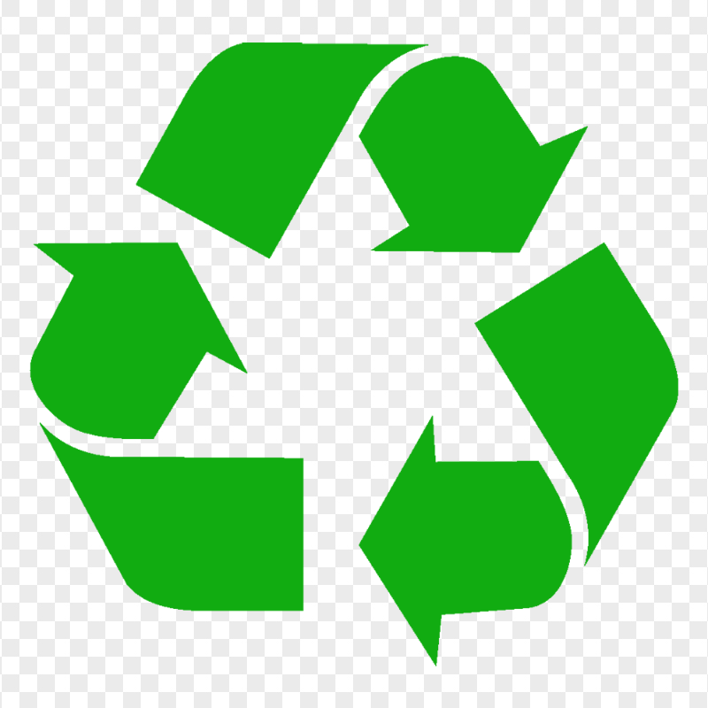
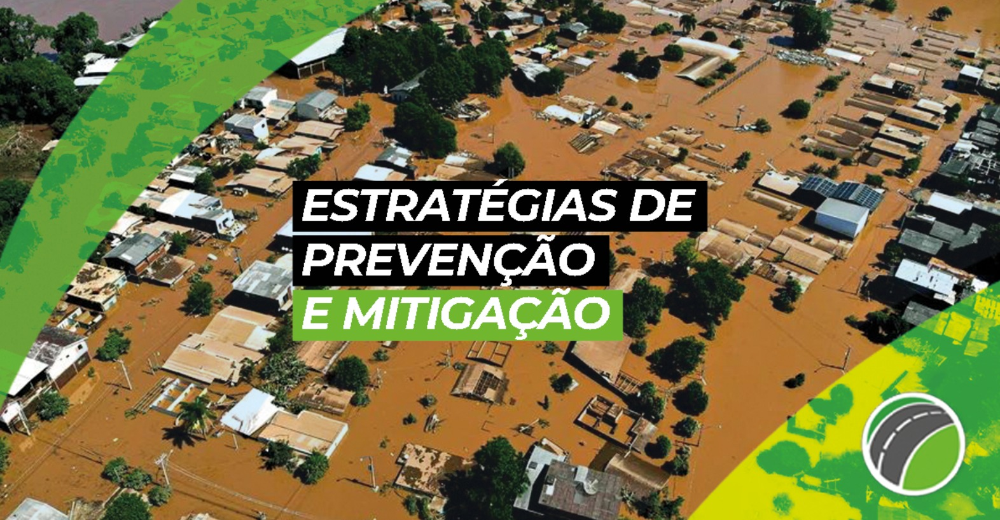
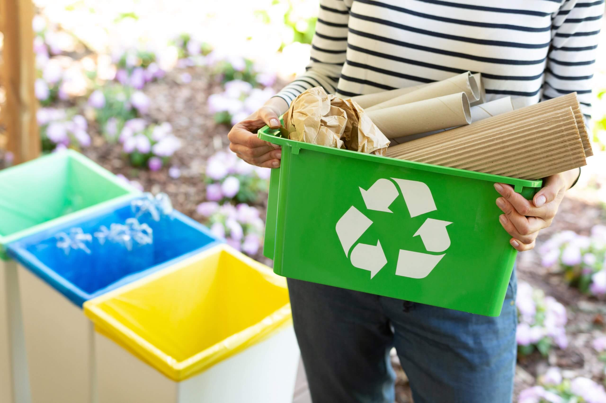
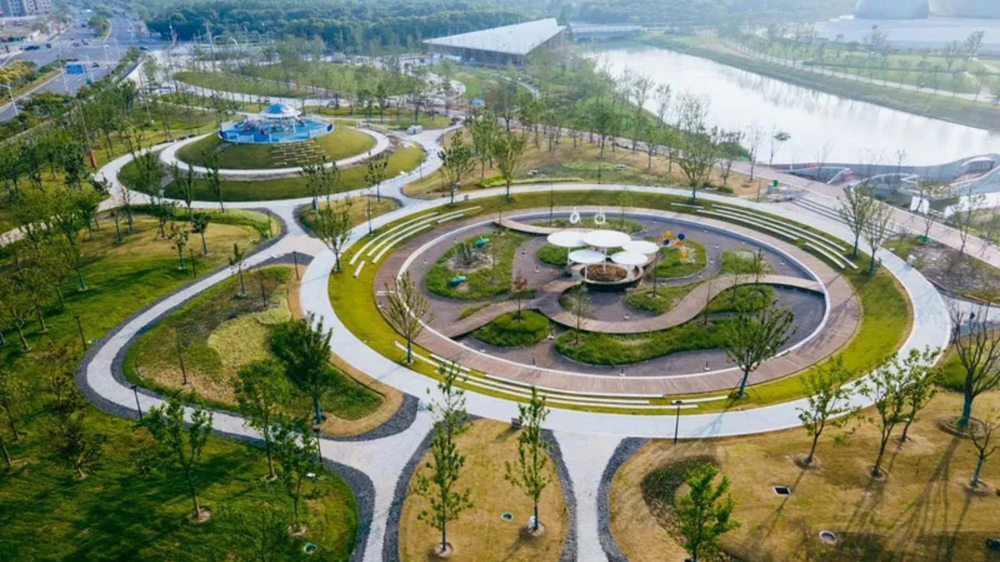

Green Alert 
Menu



Fale conosco:
Nome:
E-mail:
Tipo:
Sugestão
Denúncia
Descrição:
Enviar
Quiz Interativo – Você conhece seu impacto ambiental?
1. O que significa a sigla ESG?
A) Environmental, Social and Governance
B) Environmental, Social and Growth
C) Energy, Sustainability and Green
2. Uma prática que contribui diretamente para o consumo consciente é:
A) Comprar produtos em embalagens plásticas descartáveis
B) Escolher produtos duráveis e de empresas sustentáveis
C) Comprar o máximo possível para aproveitar promoções
3. Uma medida eficiente para prevenir enchentes nas cidades é:
A) Ampliar áreas verdes e investir em sistemas de drenagem sustentável
B) Construir mais estacionamentos de asfalto
C) Limpar os rios apenas uma vez por ano
4. Qual desses materiais leva mais tempo para se decompor na natureza?
A) Plástico
B) Papel
C) Casca de fruta
5. Sobre o conceito de pegada de carbono, podemos afirmar que:
A) É a quantidade de gases de efeito estufa emitidos direta ou indiretamente por uma pessoa, empresa ou evento.
B) É a quantidade de lixo que uma pessoa produz diariamente.
C) É a marca dos pneus no asfalto.
6. Qual dessas atitudes é mais sustentável no dia a dia?
A) Reduzir o consumo, reutilizar produtos e reciclar corretamente.
B) Jogar lixo reciclável no lixo comum, pois vai ser separado depois.
C) Usar copos descartáveis todos os dias no trabalho.
7. Qual dessas ações está ligada à Governança dentro do ESG?
A) Plantar árvores na empresa.
B) Transparência nos relatórios financeiros e combate à corrupção.
C) Instalar painéis solares.
8. Sobre enchentes, qual alternativa é verdadeira?
A) Descarte incorreto de lixo entope bueiros e agrava as enchentes.
B) As enchentes acontecem só por causa da chuva forte, sem relação com ações humanas.
C) Enchentes são boas, pois limpam as ruas da cidade.
9. Qual dessas práticas é exemplo de economia circular?
A) Transformar resíduos em novos produtos, como plástico reciclado virar móveis.
B) Jogar fora produtos antigos para comprar novos mais modernos.
C) Comprar e descartar, acreditando que a reciclagem sempre resolverá.
10. Uma empresa sustentável deve:
A) Focar só no lucro, sem se preocupar com impactos.
B) Buscar equilíbrio entre resultados econômicos, sociais e ambientais.
C) Investir apenas em marketing verde, sem mudar seus processos.
Enviar Respostas
Pontuação:
/10